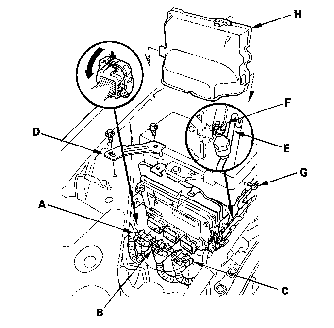
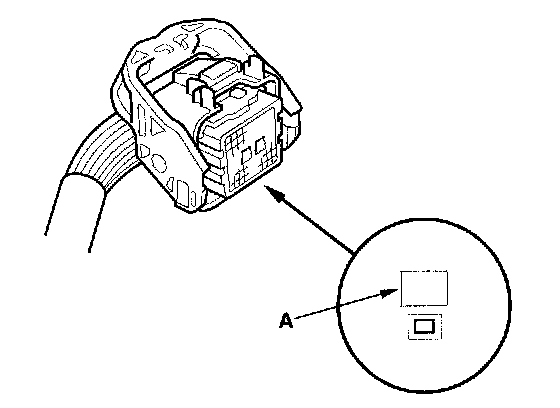
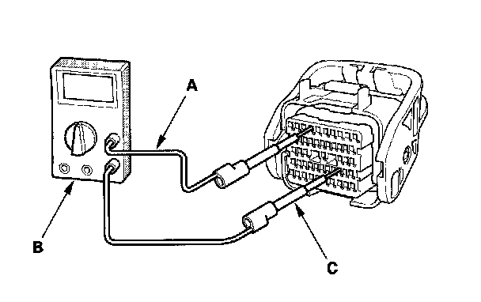

Initial Inspection and Diagnostic Overview
How to Troubleshoot Circuits at the PCM ConnectorsNOTE:
- The PCM overwrites data and monitors the EVAP system for up to 15 minutes after the ignition switch is turned OFF. Jumping the SCS line after turning the ignition switch OFF cancels this function. Disconnecting the PCM during this function, without jumping the SCS line first, can damage the PCM.
- PCM connectors A, B, and C have symbols (A=[], B=/\, C=O) embossed on them for identification.
1. Jump the SCS line with the HDS.

2. Remove the bracket (D), then free the A/C discharge line (E) from the clip (F) and remove the A/C suction line mounting bracket bolt (G).
3. Remove the cover (H), then disconnect the PCM connector A, B, and C.

4. When diagnosis/troubleshooting is made at the PCM connector, use the measurement hole (A) above the terminal you need to check.

5. Connect one side of the patch cord (A) terminals to a commercially available digital multimeter (B), and connect the other side of the patch cord terminals to a commercially available banana jack (Pomona Electronics Tool No. 3563 or equivalent) (C).
6. Gently contact the pin probe (male) at the terminal test port from the terminal side. Do not force the tips into the terminals.
NOTE:
- For accurate results, always use the pin probe (male).
- To prevent damage to the connector terminals, do not insert test equipment probes, paper clips, or other substitutes as they can damage the terminals. Damaged terminals cause a poor connection and an incorrect measurement.
- Do not puncture the insulation on a wire. Punctures can cause poor or intermittent electrical connections.